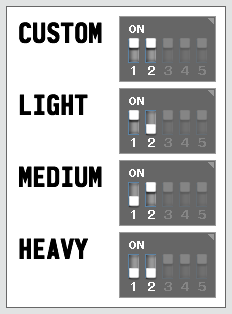

Battle
With the addition of an IR transmitter and a compatible IR receiver (often called an "apple"), the TCB can engage in IR
battle with other tanks.
For details on the hardware requirements, see the Open Panzer Wiki - Infra-Red page.
Custom Weight Class

Dipswitch settings for weight class
IR battle was originally popularized by Tamiya and their concept of weight classes has become a standard in the industry. Tamiya defines three tank
weight classes: Light, Medium and Heavy. Each class specifies the amount of time it takes for the tank to reload (firing rate), the number of hits a
tank can receive before being destroyed, and how long of an invulnerability time the tank is given after being destroyed. The TCB
implements these three weight classes precisely as defined by Tamiya, but also allows the user to specify a Custom weight class with their own settings.
The vehicle's weight class is selected by dip-switches on the TCB board. This allows you to easily change the weight class in the field without needing a computer or any other
equipment. Note that if you change the weight class, you must reboot the TCB for the change to take effect (to reboot, press the RESET button on the TCB).
For reference, the Tamiya weight class settings are listed here:
| Tamiya Weight Classes |
| Class |
Reload Time |
Max Hits |
Invulnerability Time |
| Light |
3 sec. |
3 |
15 sec. |
| Medium |
5 sec. |
6 |
12 sec. |
| Heavy |
9 sec. |
9 |
10 sec. |
Custom Weight Class Settings
Max Hits - Cannon
This setting defines how many cannon hits the vehicle can take before being destroyed. This is the primary setting that determines how "light" or "heavy" a vehicle is.
Cannon Reload Time
How much time must expire after firing the cannon before the cannon can be fired again. As a rule, lighter vehicles can reload faster than heavier ones.
Invulnerability Time
As per the Tamiya spec, a destroyed vehicle is rendered inoperative for 15 seconds. After that the vehicle automatically comes back to life, or "re-spawns" to use a computer gaming term.
Tamiya calls this "recovery mode." During recovery mode the tank is invulnerable to enemy fire, but is allowed to fire its own cannon. Invulnerability time is intended to give
the newly recovered vehicle an opportunity to move to a defensive position. Light vehicles typically have longer invulnerability times, and heavy vehicles shorter times.
Cannon IR
Cannon IR Protocol
Select the IR protocol your tank will transmit when the cannon is fired. Of course your tank will will also accept hits from this protocol.
Note: If you select the Tamiya protocol, your tank will also automatically accept hits from the Tamiya 2-Shot Kill protocol. If you select the Tamiya 2-Shot Kill protocol,
your tank will also automatically accept hits from the regular Tamiya protocol. But although the TCB will accept hits from both, it can only fire one protocol. In other words your TCB will operate the same way a Tamiya MFU would.
List of Supported Cannon Protocols:
- Tamiya - 1/16th Tamiya IR, the industry standard.
- Tamiya 2-Shot Kill - an undocumented Tamiya code that will kill any Tamiya opponent in two shots, regardless of their weight class.
- Taigen - protocol from Taigen 2.4GHz MFU.
- Heng-Long - protocol from Heng-Long RX-18.
- Tamiya 1/35 - protocol from Tamiya 1/35 scale 2.4GHz RC tank kits. This is not compatible with the 1/16th Tamiya code.
- VsTank 1/24 - protocol from VsTank Pro 1/24th scale RTR models.
- Forces of Valor 1/24 - protocol from FOV 1/24th scale RTR models. Teams are supported. These models are discontinued. In 2016 Imex/Taigen announced plans to re-release them, but it is still
unclear if the new versions will use the same IR protocol or not.
Team
Some protocols implement a team setting that can be used to ignore hits from other members of the same team.
Also Accept Hits From
If desired, you can choose an optional second protocol to accept hits from in addition to the primary protocol. Your tank will not not fire this secondary protocol - it
will only accept hits from it.
Machine Gun IR
Machine Gun IR Protocol
If desired, select a machine gun IR protocol you would like to transmit or take damage from.
List of Supported Machine Gun Protocols:
- Clark MG - Machine gun code for Clark TK series devices (TK-22, TK-60). This is the same code as #3 on any Sony TV remote.
- RCTA MG - RC Tanks Australia machine gun code, as used by the Mako 2, Mako 2 SMD, ASP Control Units, etc.
Send IR with Machine Gun Fire
Check this option to enable transmission of the selected IR protocol whenever the machine gun is fired. Unlike the cannon IR protocol, the machine gun IR signal is repeated over
and over for as long as the machine gun is active.
Take Damage from MG Hits
Check this option to enable vehicle damage from incoming machine gun hits.
Max Hits - Machine Gun
If you have enabled the option to Take Damage from MG Hits, set how many hits it will take to destroy your vehicle. Unlike the number of cannon hits this setting
does not vary by weight class - if enabled, it applies to all weight classes the same (including the Custom weight class).
Repair IR
Assuming your vehicle has already taken some damage, if it is then "hit" with a repair IR code it will be repaired by the amount of one cannon hit (or the equivalent number of machine
gun hits). This feature is always active, all you need to do is select which repair protocol you want to accept hits from. A repair operation takes 15 seconds and during that time
your vehicle's transmission will be disengaged and your cannon disabled. In other words, your vehicle is especially vulnerable to enemy fire while being repaired.
You can choose whether to fire the Cannon IR code or the Repair IR code depending on the position of the fight/repair switch on the TCB:
- In the FIGHT position, the Cannon IR code will be sent for the protocol you selected above. If a sound unit is attached the cannon sound will play, and if enabled the mechanical
recoil or airsoft units will be triggered, as will the servo recoil effect and the high intensity flash unit.
- In the REPAIR position, the Repair IR code will be sent instead, and it will be sent with much less power, so you need to be very close to the tank you are going to repair in order
for the hit to be registered. If a sound unit is attached the special repair sound will be played instead of the usual cannon sound. Mechanical recoil and airsoft will not be
triggered, nor will the servo recoil effect or the high intensity flash unit. Additionally, as soon as you fire the repair signal your vehicle's transmission will be disengaged and you will be unable to drive
for 15 seconds while the repair operation is underway (the tank you are repairing will also be immobilized for 15 seconds). If installed, indicator LEDs in the "apple" on both the tank
doing the repair and the tank being repaired will blink in a pattern that starts slow and speeds up faster, over and over again until the 15 second repair period is over.
List of Supported Repair Protocols:
- Clark Repair - Repair code for Clark TK series devices (TK-22, TK-60). This is the same code as #1 on any Sony TV remote.
- IBU Repair - Repair code used by the Italian Battle Unit 2 (IBU2 and IBU2 Pro).
- RCTA Repair - RC Tanks Australia repair code, as used by the Mako 2, Mako 2 SMD, ASP Control Units, etc.
Repair Protocol
Select the repair protocol you want to use - both in being repaired, and to repair others if your tank is set to Repair mode.
Damage Settings
Damage Definition
A Damage Definition is a collection of rules that describe what happens to a vehicle as it receives hits from IR-enabled enemies. The Tamiya specification is the most well known.
The TCB has capabilities that would make more creative and interesting Damage Definitions possible, but they are still under development.
-
| Tamiya Damage Specification |
|
Heavy |
Medium |
Light |
| 1 hit |
Speed 50% |
Speed 50% |
Speed 50% |
| 2 hits |
50% |
50% |
25% |
| 3 hits |
50% |
50% |
Destroyed |
| 4 hits |
50% |
25% |
|
| 5 hits |
25% |
25% |
|
| 6 hits |
25% |
Destroyed |
|
| 7 hits |
25% |
|
|
| 8 hits |
25% |
|
|
| 9 hits |
Destroyed |
|
|
Tamiya Spec: Tamiya defines damage from incoming hits as a reduction in vehicle speed. The first hit always results in a 50% reduction in speed. Speed will remain at 50% for subsequent hits
until the total number of of hits received equals approximately half of the number required to destroy the vehicle, at which point the speed will be reduced to 25%. Speed will then remain
at 25% until the vehicle is destroyed. After being destroyed the tank is completely immobilized for 15 seconds, after which it automatically "recovers" with full health. The TCB
accurately reproduces the Tamiya damage specification, and it will even apply the same rules to custom weight classes as well as account for machine gun hits.
The table at right shows the Tamiya speed reductions for the three standard Tamiya weight classes.
For custom weight classes the same scale is applied. The exact formula is:
- Speed reduced to 50% for Hit 1 though [(Number of Max Hits - 1) / 2]
- Speed reduced to 25% for remaining hits through [Max Hits - 1]
- Tank destroyed on hit = Max Hits
The formula becomes more complex for all classes when machine gun damage is allowed. The same basic formula is applied but instead of being based on the number of hits, it is based on the
percent of damage taken. Each cannon and machine gun hit imposes a percent of damage based on the maximum number of hits permitted:
- Cannon damage percent per hit = 100% / Max Hits Cannon
- Machine gun damage percent hit = 100% / Max Hits Machine Gun
After each hit the total damage percent is incremented depending on which type of hit was received, and the speed reduction formula is then applied:
- Speed reduced to 50% for damage <= 50%
- Speed reduced to 25% for damage >50% and <100%
- Tank destroyed when damage = 100%
- Experimental: Additional damage profiles are still under development. The Experimental option is for developers to use in testing. See the
Open Panzer Wiki - IR Battle page for up to date information.
- None: Choose this option if you are battling against stock Heng-Long/Taigen tanks that do not apply speed reductions on cannon hits. The model will still register hits and become destroyed
after the number of hits specified by the weight class, but no speed reduction will be applied.